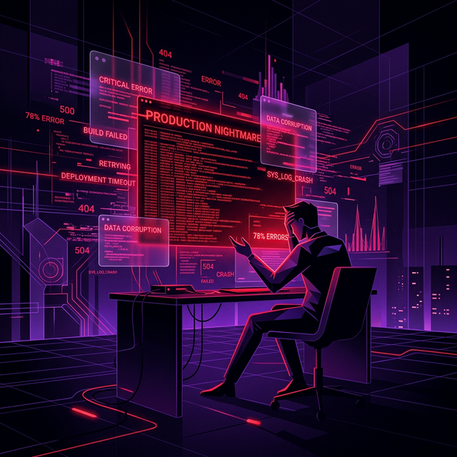

Capture (SDK)
Add 1 line of middleware. It samples traffic and batch-uploads to your Supabase with zero latency.
The Developer's Superpower
Kiroo captures the "unreproducible" production bugs and brings them to your terminal. Replay exact interactions locally in seconds.

The Pain
You see a "500 Internal Server Error" in your logs. You try to reproduce it with manual Postman requests for hours. You check the headers, the body, the state. But you keep failing to see what the user saw.
This is the "It works on my machine" nightmare.
The Solution
Kiroo's SDK records every detail of a failed interaction—recursive headers, sanitized bodies, and durations—and syncs them to your private storage vault.
One command later, that exact interaction is replaying against your local source code. No more guessing. Just debugging.
See how it works →Seamless Workflow
Add 1 line of middleware. It samples traffic and batch-uploads to your Supabase with zero latency.
Every interaction gets a unique Replay ID. Return it in your headers so users can report bugs with precision.
Run kiroo fetch . The CLI pulls the encrypted payload directly from your vault.
Replay it! Fix your code while the "production" traffic hits your local breakpoints.
Core capabilities
Local PII scrubbing. Data never leaves your storage (Supabase).
Version your API states. Diff responses between v1 and v2.
Async batching won't slow down your production users.
Explain blast radius of your changes before you ship.
Command surface
kiroo fetch <replay-id>Download a production capture from Supabase
kiroo replay <id> --target <url>Replay interaction against a local environment
kiroo get|post|put|delete <url>Execute and record API interactions manually
kiroo snapshot save|compareVersion contract states and inspect drift
kiroo analyze <tag1> <tag2>Semantic severity analysis with optional AI
kiroo check <url> --status 200CI-friendly zero-code endpoint assertions
kiroo export --format openapiGenerate OpenAPI 3.0 from real interactions
kiroo env set SUPABASE_URL <url>Configure CLI environment variables